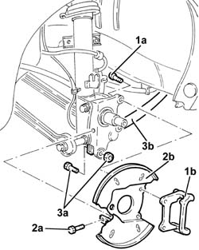
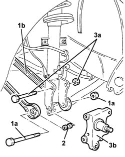

4450D14 hub axle pillar of one rear wheel, l/h or r/h - r+r with hub removed - includes bush replacement if necessary
- Path
- Procedures > 44 SUSPENSION AND WHEELS > 4450 WHEELS AND HUBS > 4450D rear wheel hubs > 4450D14 hub axle pillar of one rear wheel, l/h or r/h - r+r with hub removed - includes bush replacement if necessary
- Kind
- repair procedure (removal / refitting; the operation number is the code)
- Applies to
- all engines; all production periods
- Interactive page
- https://sloeber94.github.io/elrnDB-a156/en/#/3238239
Applies to: all engines; all production periods
 Removing
Removing
 Refitting
Refitting1. Undo the bolts (1a) and remove the rear brake caliper bracket (1b).
2. Undo the bolt (2a) and remove the rear brake disc protection (2b).
3. Undo bolt (3a) securing rear suspension longitudinal tie rod (3b) to the steering knuckle.

Applies to: all engines; all production periods
1. Undo bolt (1a) securing the wishbones (1b) from the rear steering knuckle.
2. Remove the bush.
3. Undo the bolt (3a) and remove the rear steering knuckle (3b).

Applies to: all engines; all production periods
Refitting
RemovingFit the rear steering knuckle and secure to the shock absorber by tightening the bolt to the specified torque.
 | Fastening | Component | Ø | Value (daNm) |
|---|---|---|---|---|
- | Bolt | REAR KNUCKLE | M12 | 11.7 - 12.9 |
Connect the wishbones with bush to the rear steering knuckle by tightening the bolt to the specified torque.
| Fastening | Component | Ø | Value (daNm) |
|---|---|---|---|---|
- | Bolt | REAR WISHBONE | M12 | 11.7 - 12.9 |
Connect the rear suspension longitudinal tie rod to the steering knuckle by tightening the bolt to torque.
| Fastening | Component | Ø | Value (daNm) |
|---|---|---|---|---|
- | Bolt | REAR ANCHORAGE ROD | M12 | 11.7 - 12.9 |
Fit the rear brake disc protection and secure it using the bolt.
Fit the rear brake caliper bracket and secure by tightening the bolts to the specified torque.
| Fastening | Component | Ø | Value (daNm) |
|---|---|---|---|---|
- | Bolt | REAR BRAKE CALIPER BRACKET | M10 | 4.7 - 5.8 |